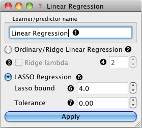

This is documentation for Orange 2.7. For the latest documentation, see Orange 3.
Linear Regression Learner¶
Learns a linear function of its input data.
Channels¶
- Input
- Data (Table)
Input data table
- Output
- Learner
The learning algorithm with the supplied parameters
- Predictor
Trained regressor
- Model Statisics
A data table containing trained model statistics
Signal Predictor and Model Statistics send the output signal only if input signal Data is present.
Description¶
Linear Regression widget construct a learner/predictor that learns a linear function from its input data. Furthermore Lasso and Ridge regularization parameters can be specified.
- The learner/predictor name
- Train an ordinary least squares or ridge regression model
- If Ridge lambda is checked the learner will build a ridge regression model with 4 as the lambda parameter.
- Ridge lambda parameter.
- Use Lasso regularization.
- The Lasso bound (bound on the beta vector L1 norm)
- Tolerance (any beta value lower then this will be forced to 0)